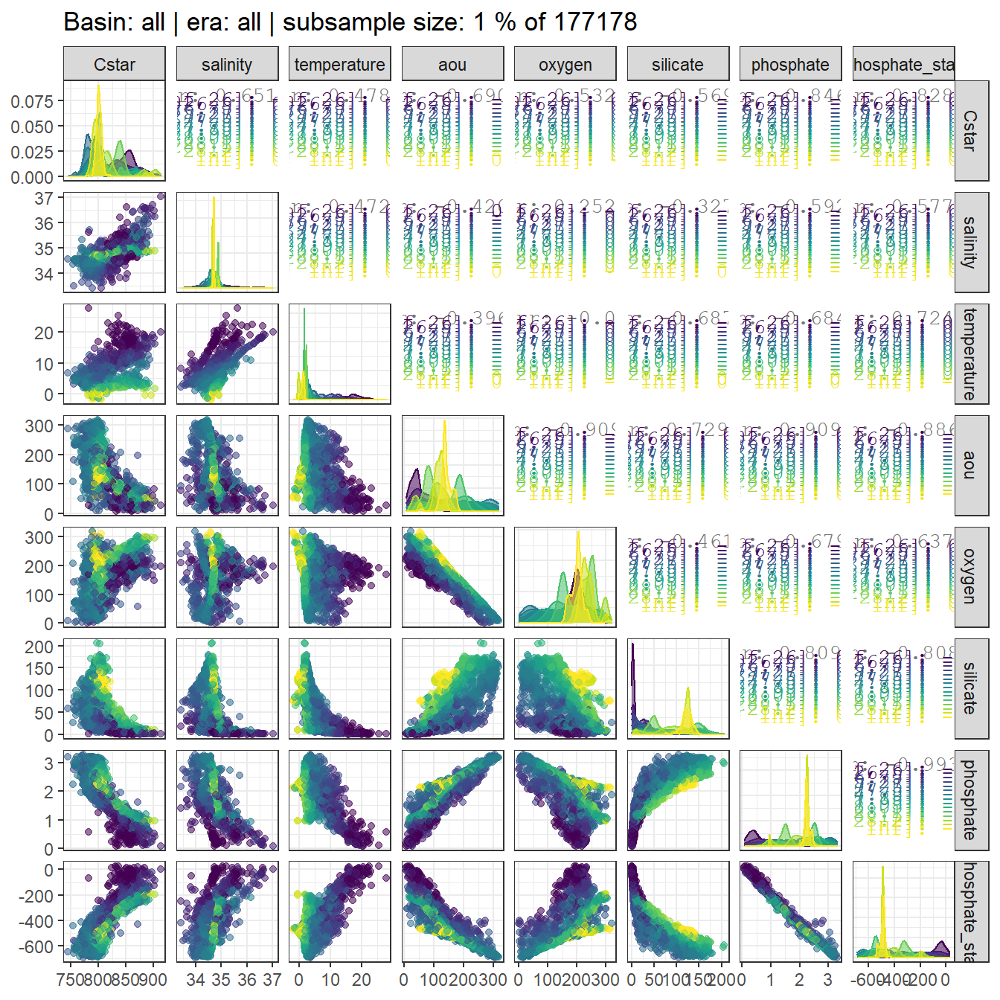
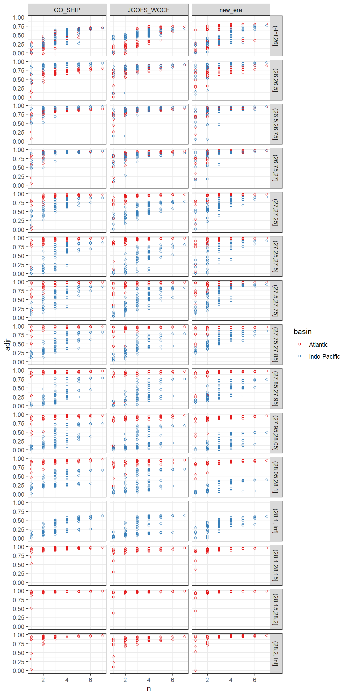

Data base
Jens Daniel Müller
28 July, 2020
Last updated: 2020-07-28
Checks: 7 0
Knit directory: Cant_eMLR/
This reproducible R Markdown analysis was created with workflowr (version 1.6.2). The Checks tab describes the reproducibility checks that were applied when the results were created. The Past versions tab lists the development history.
Great! Since the R Markdown file has been committed to the Git repository, you know the exact version of the code that produced these results.
Great job! The global environment was empty. Objects defined in the global environment can affect the analysis in your R Markdown file in unknown ways. For reproduciblity it’s best to always run the code in an empty environment.
The command set.seed(20200707) was run prior to running the code in the R Markdown file. Setting a seed ensures that any results that rely on randomness, e.g. subsampling or permutations, are reproducible.
Great job! Recording the operating system, R version, and package versions is critical for reproducibility.
Nice! There were no cached chunks for this analysis, so you can be confident that you successfully produced the results during this run.
Great job! Using relative paths to the files within your workflowr project makes it easier to run your code on other machines.
Great! You are using Git for version control. Tracking code development and connecting the code version to the results is critical for reproducibility.
The results in this page were generated with repository version 5dce915. See the Past versions tab to see a history of the changes made to the R Markdown and HTML files.
Note that you need to be careful to ensure that all relevant files for the analysis have been committed to Git prior to generating the results (you can use wflow_publish or wflow_git_commit). workflowr only checks the R Markdown file, but you know if there are other scripts or data files that it depends on. Below is the status of the Git repository when the results were generated:
Ignored files:
Ignored: .Rproj.user/
Ignored: data/GLODAPv2_2016b_MappedClimatologies/
Ignored: data/GLODAPv2_2020/
Ignored: data/World_Ocean_Atlas_2018/
Ignored: data/eMLR/
Ignored: data/pCO2_atmosphere/
Ignored: dump/
Ignored: output/figure/
Note that any generated files, e.g. HTML, png, CSS, etc., are not included in this status report because it is ok for generated content to have uncommitted changes.
These are the previous versions of the repository in which changes were made to the R Markdown (analysis/eMLR.Rmd) and HTML (docs/eMLR.html) files. If you’ve configured a remote Git repository (see ?wflow_git_remote), click on the hyperlinks in the table below to view the files as they were in that past version.
| File | Version | Author | Date | Message |
|---|---|---|---|---|
| Rmd | 5dce915 | jens-daniel-mueller | 2020-07-28 | fit top 10 models |
| html | 35f1cd4 | jens-daniel-mueller | 2020-07-28 | Build site. |
| Rmd | da498d0 | jens-daniel-mueller | 2020-07-28 | formatted table, loaded kableExtra |
| html | e5fc772 | jens-daniel-mueller | 2020-07-28 | Build site. |
| Rmd | 7fe0338 | jens-daniel-mueller | 2020-07-28 | rmse output, 10 best models selected |
| html | 4eebe14 | jens-daniel-mueller | 2020-07-24 | Build site. |
| Rmd | 12f9ef2 | jens-daniel-mueller | 2020-07-24 | started neutral density calculation |
| html | 2e08795 | jens-daniel-mueller | 2020-07-24 | Build site. |
| html | 61a1a48 | jens-daniel-mueller | 2020-07-24 | Build site. |
| Rmd | 864a6e3 | jens-daniel-mueller | 2020-07-24 | merged predictor data sets |
| html | 7f51d57 | jens-daniel-mueller | 2020-07-24 | Build site. |
| Rmd | 4a8deb2 | jens-daniel-mueller | 2020-07-24 | corrected false to FALSE |
| html | 2df2065 | jens-daniel-mueller | 2020-07-23 | Build site. |
| Rmd | fa350cf | jens-daniel-mueller | 2020-07-23 | predictor correlation plots, bin2d map plots |
| html | 9d1d67d | jens-daniel-mueller | 2020-07-23 | Build site. |
| Rmd | 3b6658b | jens-daniel-mueller | 2020-07-23 | predictor correlation plots, bin2d map plots |
| html | 2e3691a | jens-daniel-mueller | 2020-07-23 | Build site. |
| Rmd | 26bdc0a | jens-daniel-mueller | 2020-07-23 | new era label, predictor correlation check started |
| html | 556e6cc | jens-daniel-mueller | 2020-07-23 | Build site. |
| Rmd | 1ce10e7 | jens-daniel-mueller | 2020-07-23 | read full GLODAP Cant data set rather than joining again |
| Rmd | 0cb3db2 | jens-daniel-mueller | 2020-07-23 | started MLR fitting |
| Rmd | cf8bc74 | jens-daniel-mueller | 2020-07-23 | started MLR fitting |
| Rmd | 0252675 | jens-daniel-mueller | 2020-07-23 | modeling started |
| html | fdfa7b9 | jens-daniel-mueller | 2020-07-22 | Build site. |
| Rmd | 6416150 | jens-daniel-mueller | 2020-07-22 | cut gamma into slabs |
| html | 0cecfbf | jens-daniel-mueller | 2020-07-22 | Build site. |
| Rmd | 48cf01f | jens-daniel-mueller | 2020-07-22 | defined isoneutral slabs |
| Rmd | 32ed280 | jens-daniel-mueller | 2020-07-22 | sign in Cstar delta plot |
| html | 44334f8 | jens-daniel-mueller | 2020-07-22 | Build site. |
| Rmd | c398496 | jens-daniel-mueller | 2020-07-22 | plot update |
| html | 0ff656b | jens-daniel-mueller | 2020-07-22 | Build site. |
| Rmd | 4b81f16 | jens-daniel-mueller | 2020-07-22 | plot update |
| html | 23038c8 | jens-daniel-mueller | 2020-07-22 | Build site. |
| Rmd | 09b3ca8 | jens-daniel-mueller | 2020-07-22 | eding plain text, restructuring some code |
| html | ac6308d | jens-daniel-mueller | 2020-07-22 | Build site. |
| Rmd | 77c9642 | jens-daniel-mueller | 2020-07-22 | formatted plots |
| html | 40b99cb | jens-daniel-mueller | 2020-07-22 | Build site. |
| Rmd | 8a49adf | jens-daniel-mueller | 2020-07-22 | adjustment to reference year implemented |
| html | bb9c002 | jens-daniel-mueller | 2020-07-21 | Build site. |
| Rmd | d2ed0f8 | jens-daniel-mueller | 2020-07-21 | harmonied lat lon labeling |
| html | e1488e6 | jens-daniel-mueller | 2020-07-19 | Build site. |
| Rmd | e688d6e | jens-daniel-mueller | 2020-07-19 | formating |
| html | f7ea007 | jens-daniel-mueller | 2020-07-19 | Build site. |
| Rmd | 0992256 | jens-daniel-mueller | 2020-07-19 | plotted individual Cstar terms |
| html | 22b588c | jens-daniel-mueller | 2020-07-18 | Build site. |
| html | fdfe5a0 | jens-daniel-mueller | 2020-07-17 | Build site. |
| Rmd | f7485c6 | jens-daniel-mueller | 2020-07-17 | re run als emlr |
| html | 56c3ed9 | jens-daniel-mueller | 2020-07-14 | Build site. |
| html | 74d4abd | jens-daniel-mueller | 2020-07-14 | Build site. |
| html | 1c511ce | jens-daniel-mueller | 2020-07-14 | Build site. |
| Rmd | e03016e | jens-daniel-mueller | 2020-07-14 | split read in per data set |
| html | 45ed0ea | jens-daniel-mueller | 2020-07-14 | Build site. |
| Rmd | dc1c56e | jens-daniel-mueller | 2020-07-14 | tref calculated |
| html | b1ece68 | jens-daniel-mueller | 2020-07-13 | Build site. |
| Rmd | 8eb1b22 | jens-daniel-mueller | 2020-07-13 | cleaned data base file |
| Rmd | 9e8f7f1 | jens-daniel-mueller | 2020-07-13 | untracked changes |
| html | 79312b2 | jens-daniel-mueller | 2020-07-13 | Build site. |
| Rmd | ffbc2a1 | jens-daniel-mueller | 2020-07-13 | added Cstar calculation |
| html | 090cfeb | jens-daniel-mueller | 2020-07-13 | Build site. |
| Rmd | e6a2ade | jens-daniel-mueller | 2020-07-13 | added Cstar calculation |
library(tidyverse)
library(lubridate)
library(patchwork)
library(broom)
library(GGally)
library(olsrr)
library(knitr)
library(kableExtra)
library(broom)1 Required data
Required are:
- clean version of GLODAPGLODAPv2.2020
- C_ant from GLODAPv2_2016b_MappedClimatologies
- annual mean atmospheric pCO2
GLODAP <- read_csv(here::here("data/GLODAPv2_2020/_summarized_data_files",
"GLODAPv2.2020_clean.csv"))
Cant_clim <- read_csv(here::here("data/GLODAPv2_2016b_MappedClimatologies/_summarized_files",
"Cant.csv"))
co2_atm <- read_csv(here::here("data/pCO2_atmosphere/_summarized_data_files",
"co2_atm.csv"))2 C*
2.1 Stoichiometric ratios
rCP <- 117
rNP <- 16The stoichiometric nutrient ratios for the production and mineralization of organic matter were set to:
- C/P: 117
- N/P: 16
2.2 Calculation
GLODAP <- GLODAP %>%
mutate(rCP_phosphate = -rCP * phosphate,
talk_05 = -0.5 * talk,
rNP_phosphate_05 = -0.5 * rNP * phosphate,
Cstar = tco2 + rCP_phosphate + talk_05 + rNP_phosphate_05)3 Reference year adjustment
The scaling factor for the reference year adjustment is an apriori estiamte of Cant at a given location and depth. Here, Cant from the GLODAP mapped Climatology was used.
Note that eq. 6 in Clement and Gruber (2018) misses pCO2 pre-industrial in the denominator. Here we use the equation published in Gruber et al. (2019).
3.1 Merge GLODAP data set with…
3.1.1 … Cant
Cant_clim <- Cant_clim %>%
drop_na()
# GLODAP_Cant_full <- full_join(GLODAP, Cant_clim)
#
# GLODAP_Cant_full %>% write_csv(here::here("data/GLODAPv2_2020/_summarized_data_files",
# "GLODAP_Cant_full.csv"))
GLODAP_Cant_full <- read_csv(here::here("data/GLODAPv2_2020/_summarized_data_files",
"GLODAP_Cant_full.csv"))The mapped Cant product was merged with GLODAP observation by:
- using an identical 1x1° horizontal grid
- linear interpolation of Cant from standard to sampling depth
GLODAP_Cant_observations_available <- GLODAP_Cant_full %>%
group_by(lat, lon) %>%
mutate(n_GLODAP = sum(!is.na(Cstar))) %>%
ungroup() %>%
filter(n_GLODAP > 0) %>%
select(-n_GLODAP)
rm(GLODAP_Cant_full)
GLODAP_Cant_observations_available <- GLODAP_Cant_observations_available %>%
group_by(lat, lon) %>%
arrange(depth) %>%
mutate(Cant_int = approxfun(depth, Cant, rule = 2)(depth)) %>%
ungroup()
ggplot() +
geom_path(data = GLODAP_Cant_observations_available %>%
filter(lat == 48.5, lon == 165.5, !is.na(Cant)) %>%
arrange(depth),
aes(Cant, depth, col = "mapped")) +
geom_point(data = GLODAP_Cant_observations_available %>%
filter(lat == 48.5, lon == 165.5, !is.na(Cant)) %>%
arrange(depth),
aes(Cant, depth, col = "mapped")) +
geom_point(data = GLODAP_Cant_observations_available %>%
filter(lat == 48.5, lon == 165.5, date == ymd("2018-06-27")),
aes(Cant_int, depth, col = "interpolated")) +
scale_y_reverse() +
scale_color_brewer(palette = "Dark2", name = "") +
labs(title = "Cant interpolation to sampling depth - example profile")
GLODAP <- GLODAP_Cant_observations_available %>%
filter(!is.na(Cstar)) %>%
mutate(Cant = Cant_int) %>%
select(-Cant_int)
rm(GLODAP_Cant_observations_available, Cant_clim)3.1.2 … Atmospheric pCO2
GLODAP <- left_join(GLODAP, co2_atm)3.2 Calculate adjustment
GLODAP <- GLODAP %>%
group_by(era) %>%
mutate(tref = median(year)) %>%
ungroup()
tref <- GLODAP %>%
group_by(era) %>%
summarise(year = median(year)) %>%
ungroup()
co2_atm_tref <- right_join(co2_atm, tref) %>%
select(-year) %>%
rename(pCO2_tref = pCO2)
GLODAP <- full_join(GLODAP, co2_atm_tref)
rm(co2_atm, co2_atm_tref, tref)
GLODAP <- GLODAP %>%
mutate(Cstar_tref_delta =
((pCO2 - pCO2_tref) / (pCO2_tref - 280)) * Cant,
Cstar_tref = Cstar - Cstar_tref_delta)3.3 Control plots
GLODAP %>%
ggplot(aes(Cstar_tref_delta)) +
geom_histogram()
GLODAP %>%
sample_n(10000) %>%
ggplot(aes(year - tref, Cstar_tref_delta, col=Cant)) +
geom_point() +
scale_color_viridis_c() +
labs(title = "random subsample 1e4")
4 Selected section plots
Selected sections are plotted to demonstrate the magnitude of various parameters and corrections relevant to C*.
cruises_meridional <- c("1041")
# cruises_meridional <- c("1041","1042", "260",
# "2011", "393", "1031", "394", "395",
# "1088", "983")
# cruises_zonal <- c()
GLODAP_cruise <- GLODAP %>%
filter(cruise %in% cruises_meridional)bbox <- c(
"xmin" = min(GLODAP_cruise$lat),
"ymin" = min(GLODAP_cruise$depth),
"xmax" = max(GLODAP_cruise$lat),
"ymax" = max(GLODAP_cruise$depth)
)
grd_template <- expand.grid(
lat = seq(from = bbox["xmin"], to = bbox["xmax"], by = 1),
depth = seq(from = bbox["ymin"], to = bbox["ymax"], by = 50) # 20 m resolution
)
crs_raster_format <- " +proj=utm +zone=33 +ellps=GRS80 +towgs84=0,0,0,0,0,0,0 +units=m +no_defs"
grd_template_raster <- grd_template %>%
dplyr::mutate(Z = 0) %>%
raster::rasterFromXYZ(
crs = crs_raster_format)
# Generalized Additive Model
fit_GAM <- mgcv::gam( # using {mgcv}
gamma ~ s(lat, depth), # here come our X/Y/Z data - straightforward enough
data = GLODAP_cruise # specify in which object the data is stored
)
# Generalized Additive Model
interp_GAM <- grd_template %>%
mutate(Z = predict(fit_GAM, .)) %>%
raster::rasterFromXYZ(crs = crs_raster_format)
df <- raster::rasterToPoints(interp_GAM) %>% as_tibble()
colnames(df) <- c("X", "Y", "Z")
ggplot(df, aes(x = X, y = Y, fill = Z, z = Z)) +
geom_raster() +
geom_contour(col="white") +
ggtitle(label = "interp GAM") +
scale_fill_viridis_c() +
scale_y_reverse() +
coord_cartesian(expand = 0)mapWorld <- borders("world", colour = "gray60", fill = "gray60")
GLODAP_cruise %>%
arrange(date) %>%
ggplot(aes(lon, lat)) +
mapWorld +
geom_path() +
geom_point(aes(col = date)) +
coord_quickmap(expand = 0) +
scale_color_viridis_c(trans = "date") +
labs(title = paste("Cruise year:", mean(GLODAP_cruise$year))) +
theme(legend.position = "bottom")
lat_section <-
GLODAP_cruise %>%
ggplot(aes(lat, depth)) +
scale_y_reverse() +
scale_color_viridis_c() +
theme(legend.position = "bottom")
lat_section +
geom_point(aes(col = tco2))
lat_section +
geom_point(aes(col = talk))
lat_section +
geom_point(aes(col = phosphate))
lat_section +
geom_point(aes(col = rCP_phosphate))
lat_section +
geom_point(aes(col = talk_05))
lat_section +
geom_point(aes(col = rNP_phosphate_05))
lat_section +
geom_point(aes(col = Cstar))
lat_section +
geom_point(aes(col = Cant))
lat_section +
geom_point(aes(col = -Cstar_tref_delta))
rm(mapWorld, lat_section, GLODAP_cruise)5 MLR
5.1 Isoneutral slabs
slabs_Atl <- c(
-Inf,
26.00,
26.50,
26.75,
27.00,
27.25,
27.50,
27.75,
27.85,
27.95,
28.05,
28.10,
28.15,
28.20,
Inf)
slabs_Ind_Pac <- c(
-Inf,
26.00,
26.50,
26.75,
27.00,
27.25,
27.50,
27.75,
27.85,
27.95,
28.05,
28.10,
Inf)The following boundaries for isoneutral slabs were defined:
- Atlantic: -, 26, 26.5, 26.75, 27, 27.25, 27.5, 27.75, 27.85, 27.95, 28.05, 28.1, 28.15, 28.2,
- Indo-Pacific: -, 26, 26.5, 26.75, 27, 27.25, 27.5, 27.75, 27.85, 27.95, 28.05, 28.1,
GLODAP_Atl <- GLODAP %>%
filter(basin == "Atlantic") %>%
mutate(gamma_slab = cut(gamma, slabs_Atl))
GLODAP_Ind_Pac <- GLODAP %>%
filter(basin == "Indo-Pacific") %>%
mutate(gamma_slab = cut(gamma, slabs_Ind_Pac))
GLODAP <- bind_rows(GLODAP_Atl, GLODAP_Ind_Pac)
rm(GLODAP_Atl, GLODAP_Ind_Pac)GLODAP_cruise <- GLODAP %>%
filter(cruise %in% cruises_meridional)
lat_section <-
GLODAP_cruise %>%
ggplot(aes(lat, depth)) +
scale_y_reverse() +
theme(legend.position = "bottom")
lat_section +
geom_point(aes(col = gamma)) +
scale_color_viridis_c()
lat_section +
geom_point(aes(col = gamma_slab)) +
scale_color_viridis_d()
5.2 PO4* calculation
Currently, PO4* is calculated according to Gruber et al. (2019), ie based on nitrate rather than oxygen.
GLODAP <- GLODAP %>%
mutate(phosphate_star = phosphate - 16*nitrate + 29)5.3 Predictor correlation
GLODAP %>%
sample_frac(0.1) %>%
ggpairs(columns = c("Cstar",
"salinity",
"temperature",
"aou",
"oxygen",
"silicate",
"phosphate",
"phosphate_star"),
ggplot2::aes(col = gamma_slab, fill = gamma_slab, alpha = 0.01)) +
scale_fill_viridis_d() +
scale_color_viridis_d() +
labs(title = paste("Basin: all | era: all | subsample size: 10 % of", nrow(GLODAP)))
Individual correlation plots for each basin and era are available upon request.
for (i_basin in unique(GLODAP$basin)) {
for (i_era in unique(GLODAP$era)) {
# i_basin <- unique(GLODAP$basin)[1]
# i_era <- unique(GLODAP$era)[1]
print(i_basin)
print(i_era)
p <- GLODAP %>%
filter(basin == i_basin, era == i_era) %>%
sample_frac(0.1) %>%
ggpairs(columns = c("salinity","temperature", "aou", "oxygen", "silicate", "phosphate", "phosphate_star"),
ggplot2::aes(col = gamma_slab, fill = gamma_slab, alpha = 0.01)) +
scale_fill_viridis_d() +
scale_color_viridis_d() +
labs(title = paste("Basin:", i_basin, "| era:", i_era, "| subsample size: 10%")) +
theme(text = element_text(size=20))
png(here::here("output/figure/eMLR/predictor_correlation",
paste("predictor_correlation", i_basin, i_era, ".png", sep = "_")),
width = 20, height = 20, units = "in", res = 300)
print(p)
dev.off()
}
}5.4 Model fitting
GLODAP %>% write_csv(here::here("data/GLODAPv2_2020/_summarized_data_files",
"GLODAP_MLR_fitting_ready.csv"))5.4.1 Predictor selection
# gamma_slab_max <- GLODAP %>%
# filter(basin == "Atlantic", era == "new_era") %>%
# group_by(gamma_slab) %>%
# count() %>%
# ungroup() %>%
# filter(n == max(n)) %>%
# pull(1)
for (i_basin in unique(GLODAP$basin)) {
for (i_era in unique(GLODAP$era)) {
# i_basin <- unique(GLODAP$basin)[1]
# i_era <- unique(GLODAP$era)[1]
print(i_basin)
print(i_era )
GLODAP_basin_era <- GLODAP %>%
filter(basin == i_basin, era == i_era)
for (i_gamma_slab in unique(GLODAP_basin_era$gamma_slab)) {
# i_gamma_slab <- unique(GLODAP_basin_era$gamma_slab)[1]
print(i_gamma_slab)
GLODAP_basin_era_slab <- GLODAP_basin_era %>%
filter(gamma_slab == i_gamma_slab)
lm_full <- lm(Cstar ~
salinity +
temperature +
aou +
oxygen +
silicate +
phosphate +
phosphate_star,
data = GLODAP_basin_era_slab)
lm_all <- ols_step_all_possible(lm_full)
temp <- as_tibble(lm_all$result)
temp <- temp %>%
mutate(basin = i_basin,
era = i_era,
gamma_slab = i_gamma_slab)
if (exists("all_lm_stats")) {
all_lm_stats <- bind_rows(all_lm_stats, temp)
}
if (!exists("all_lm_stats")) {
all_lm_stats <- temp
}
rm(lm_full, lm_all, temp)
}
}
}
all_lm_stats %>%
write_csv(here::here("data/eMLR",
"all_lm_stats.csv"))all_lm_stats <- read_csv(here::here("data/eMLR",
"all_lm_stats.csv"))
# all_lm_stats <- all_lm_stats %>%
# rename(sigma = rmse)
all_lm_stats %>%
ggplot(aes(n, rmse, col = basin)) +
geom_hline(yintercept = 10) +
geom_point(shape = 21) +
facet_grid(gamma_slab~era) +
scale_color_brewer(palette = "Set1")
all_lm_stats %>%
ggplot(aes(n, adjr, col = basin)) +
geom_point(shape = 21) +
facet_grid(gamma_slab~era) +
scale_color_brewer(palette = "Set1")
all_lm_stats %>%
ggplot(aes(n, aic, col = basin)) +
geom_point(shape = 21) +
facet_grid(gamma_slab~era) +
scale_color_brewer(palette = "Set1")
# all_lm_stats %>%
# ggplot(aes(rmse, predictors, col = gamma_slab)) +
# geom_point(shape = 21) +
# facet_grid(.~basin)n_predictors_max <- 5
n_predictors_min <- 2
all_lm_stats <- all_lm_stats %>%
filter(n >= n_predictors_min,
n <= n_predictors_max) %>%
select(basin, era, gamma_slab, predictors, rmse)
all_lm_stats_wide <- all_lm_stats %>%
pivot_wider(names_from = era, values_from = rmse, names_prefix = "rmse_")
all_lm_stats_wide <- all_lm_stats_wide %>%
mutate(rmse_sum = rmse_JGOFS_WOCE + rmse_GO_SHIP + rmse_new_era)
lm_best <- all_lm_stats_wide %>%
group_by(basin, gamma_slab) %>%
slice_min(rmse_sum, n = 10) %>%
ungroup()
kable(lm_best) %>%
add_header_above() %>%
kable_styling() %>%
scroll_box(width = "100%", height = "400px")| basin | gamma_slab | predictors | rmse_JGOFS_WOCE | rmse_GO_SHIP | rmse_new_era | rmse_sum |
|---|---|---|---|---|---|---|
| Atlantic | (-Inf,26] | salinity temperature aou oxygen phosphate | 7.233104 | 6.424028 | 2.765130 | 16.422262 |
| Atlantic | (-Inf,26] | temperature aou oxygen phosphate phosphate_star | 7.238731 | 6.515207 | 2.671672 | 16.425610 |
| Atlantic | (-Inf,26] | temperature oxygen silicate phosphate phosphate_star | 7.342865 | 6.367196 | 2.734672 | 16.444733 |
| Atlantic | (-Inf,26] | salinity aou oxygen silicate phosphate | 7.363174 | 6.256378 | 2.875347 | 16.494899 |
| Atlantic | (-Inf,26] | salinity temperature oxygen silicate phosphate | 7.246124 | 6.404483 | 2.852778 | 16.503385 |
| Atlantic | (-Inf,26] | salinity temperature aou silicate phosphate | 7.276259 | 6.370141 | 2.857798 | 16.504198 |
| Atlantic | (-Inf,26] | temperature aou silicate phosphate phosphate_star | 7.399728 | 6.385907 | 2.744721 | 16.530356 |
| Atlantic | (-Inf,26] | temperature aou oxygen silicate phosphate | 7.055656 | 6.789733 | 2.766765 | 16.612154 |
| Atlantic | (-Inf,26] | salinity temperature oxygen phosphate phosphate_star | 7.594469 | 6.323889 | 2.711688 | 16.630046 |
| Atlantic | (-Inf,26] | salinity temperature aou phosphate phosphate_star | 7.637863 | 6.281897 | 2.717708 | 16.637469 |
| Atlantic | (26,26.5] | temperature aou oxygen silicate phosphate | 5.363576 | 6.786906 | 3.120245 | 15.270727 |
| Atlantic | (26,26.5] | temperature aou oxygen phosphate phosphate_star | 5.437464 | 6.819617 | 3.180828 | 15.437908 |
| Atlantic | (26,26.5] | salinity temperature aou oxygen phosphate | 5.453636 | 6.837398 | 3.164633 | 15.455668 |
| Atlantic | (26,26.5] | aou oxygen silicate phosphate phosphate_star | 5.394684 | 6.892097 | 3.178032 | 15.464813 |
| Atlantic | (26,26.5] | temperature aou oxygen phosphate | 5.456491 | 6.837548 | 3.181060 | 15.475099 |
| Atlantic | (26,26.5] | temperature aou silicate phosphate phosphate_star | 5.430921 | 6.955271 | 3.193715 | 15.579907 |
| Atlantic | (26,26.5] | salinity aou oxygen phosphate phosphate_star | 5.443918 | 6.941283 | 3.196238 | 15.581438 |
| Atlantic | (26,26.5] | salinity aou oxygen silicate phosphate | 5.432267 | 6.973621 | 3.182424 | 15.588312 |
| Atlantic | (26,26.5] | aou oxygen phosphate phosphate_star | 5.467333 | 6.943299 | 3.206234 | 15.616865 |
| Atlantic | (26,26.5] | aou oxygen silicate phosphate | 5.439014 | 7.001567 | 3.184956 | 15.625537 |
| Atlantic | (26.5,26.75] | temperature aou oxygen silicate phosphate | 5.219837 | 5.589322 | 3.704869 | 14.514028 |
| Atlantic | (26.5,26.75] | salinity temperature aou silicate phosphate | 5.156094 | 5.583682 | 3.805535 | 14.545311 |
| Atlantic | (26.5,26.75] | salinity temperature oxygen silicate phosphate | 5.145692 | 5.566412 | 3.838208 | 14.550311 |
| Atlantic | (26.5,26.75] | temperature oxygen silicate phosphate phosphate_star | 5.211439 | 5.585131 | 3.758446 | 14.555017 |
| Atlantic | (26.5,26.75] | temperature aou silicate phosphate phosphate_star | 5.228077 | 5.603867 | 3.730283 | 14.562227 |
| Atlantic | (26.5,26.75] | aou oxygen silicate phosphate phosphate_star | 5.263529 | 5.643834 | 3.699733 | 14.607095 |
| Atlantic | (26.5,26.75] | salinity aou oxygen silicate phosphate | 5.201822 | 5.640533 | 3.769774 | 14.612130 |
| Atlantic | (26.5,26.75] | salinity temperature aou oxygen phosphate | 5.359083 | 5.561143 | 3.703778 | 14.624004 |
| Atlantic | (26.5,26.75] | temperature aou oxygen phosphate phosphate_star | 5.397508 | 5.580509 | 3.646853 | 14.624871 |
| Atlantic | (26.5,26.75] | salinity temperature oxygen phosphate phosphate_star | 5.369848 | 5.574805 | 3.734403 | 14.679057 |
| Atlantic | (26.75,27] | salinity temperature oxygen silicate phosphate | 4.683879 | 5.085526 | 3.618918 | 13.388323 |
| Atlantic | (26.75,27] | salinity temperature aou silicate phosphate | 4.703334 | 5.094493 | 3.629813 | 13.427639 |
| Atlantic | (26.75,27] | salinity temperature oxygen phosphate phosphate_star | 4.729705 | 5.146821 | 3.618566 | 13.495093 |
| Atlantic | (26.75,27] | temperature oxygen silicate phosphate phosphate_star | 4.734490 | 5.134443 | 3.633381 | 13.502314 |
| Atlantic | (26.75,27] | salinity temperature aou phosphate phosphate_star | 4.749608 | 5.152628 | 3.629477 | 13.531713 |
| Atlantic | (26.75,27] | salinity temperature aou oxygen phosphate | 4.742004 | 5.170997 | 3.622653 | 13.535654 |
| Atlantic | (26.75,27] | salinity temperature oxygen phosphate | 4.742309 | 5.171062 | 3.623176 | 13.536547 |
| Atlantic | (26.75,27] | temperature aou silicate phosphate phosphate_star | 4.761655 | 5.140782 | 3.647651 | 13.550089 |
| Atlantic | (26.75,27] | temperature aou oxygen phosphate phosphate_star | 4.757625 | 5.161932 | 3.641829 | 13.561385 |
| Atlantic | (26.75,27] | salinity temperature aou phosphate | 4.758055 | 5.173299 | 3.634027 | 13.565381 |
| Atlantic | (27,27.25] | temperature oxygen silicate phosphate phosphate_star | 5.150199 | 4.920376 | 4.425074 | 14.495649 |
| Atlantic | (27,27.25] | temperature aou oxygen phosphate phosphate_star | 5.155952 | 4.955575 | 4.485850 | 14.597377 |
| Atlantic | (27,27.25] | temperature aou silicate phosphate phosphate_star | 5.201088 | 4.956303 | 4.448113 | 14.605505 |
| Atlantic | (27,27.25] | salinity temperature oxygen phosphate phosphate_star | 5.205096 | 4.944247 | 4.501528 | 14.650871 |
| Atlantic | (27,27.25] | temperature oxygen phosphate phosphate_star | 5.243274 | 4.975377 | 4.507371 | 14.726023 |
| Atlantic | (27,27.25] | salinity temperature oxygen silicate phosphate | 5.025839 | 5.042443 | 4.665827 | 14.734108 |
| Atlantic | (27,27.25] | salinity temperature aou phosphate phosphate_star | 5.259815 | 4.977166 | 4.519119 | 14.756100 |
| Atlantic | (27,27.25] | salinity temperature aou silicate phosphate | 5.086705 | 5.064103 | 4.676695 | 14.827503 |
| Atlantic | (27,27.25] | temperature aou phosphate phosphate_star | 5.294046 | 5.010556 | 4.526341 | 14.830943 |
| Atlantic | (27,27.25] | aou oxygen silicate phosphate phosphate_star | 5.340125 | 5.046883 | 4.477069 | 14.864077 |
| Atlantic | (27.25,27.5] | salinity temperature oxygen phosphate phosphate_star | 4.784084 | 4.325538 | 3.661619 | 12.771241 |
| Atlantic | (27.25,27.5] | salinity temperature aou phosphate phosphate_star | 4.831010 | 4.335440 | 3.672001 | 12.838450 |
| Atlantic | (27.25,27.5] | temperature aou oxygen phosphate phosphate_star | 4.778594 | 4.486817 | 3.662943 | 12.928355 |
| Atlantic | (27.25,27.5] | temperature oxygen silicate phosphate phosphate_star | 4.815587 | 4.464644 | 3.651525 | 12.931757 |
| Atlantic | (27.25,27.5] | salinity aou oxygen phosphate phosphate_star | 4.909921 | 4.380487 | 3.693874 | 12.984282 |
| Atlantic | (27.25,27.5] | temperature aou silicate phosphate phosphate_star | 4.864184 | 4.466131 | 3.654361 | 12.984677 |
| Atlantic | (27.25,27.5] | temperature oxygen phosphate phosphate_star | 4.836475 | 4.492731 | 3.663888 | 12.993095 |
| Atlantic | (27.25,27.5] | salinity temperature aou oxygen phosphate | 4.690176 | 4.375626 | 3.957693 | 13.023495 |
| Atlantic | (27.25,27.5] | temperature aou phosphate phosphate_star | 4.877589 | 4.486869 | 3.672726 | 13.037184 |
| Atlantic | (27.25,27.5] | salinity temperature oxygen silicate phosphate | 4.785817 | 4.370284 | 3.888408 | 13.044510 |
| Atlantic | (27.5,27.75] | temperature aou silicate phosphate phosphate_star | 4.178798 | 4.405750 | 4.230958 | 12.815506 |
| Atlantic | (27.5,27.75] | temperature oxygen silicate phosphate phosphate_star | 4.171250 | 4.419163 | 4.233864 | 12.824277 |
| Atlantic | (27.5,27.75] | aou oxygen silicate phosphate phosphate_star | 4.197885 | 4.399525 | 4.230411 | 12.827821 |
| Atlantic | (27.5,27.75] | salinity temperature oxygen silicate phosphate | 4.179766 | 4.394406 | 4.324356 | 12.898528 |
| Atlantic | (27.5,27.75] | salinity temperature aou silicate phosphate | 4.191718 | 4.383035 | 4.326416 | 12.901169 |
| Atlantic | (27.5,27.75] | salinity aou oxygen silicate phosphate | 4.210252 | 4.376137 | 4.327749 | 12.914138 |
| Atlantic | (27.5,27.75] | temperature aou oxygen silicate phosphate | 4.183773 | 4.409376 | 4.344048 | 12.937196 |
| Atlantic | (27.5,27.75] | temperature aou silicate phosphate | 4.197530 | 4.418293 | 4.345437 | 12.961259 |
| Atlantic | (27.5,27.75] | temperature oxygen silicate phosphate | 4.186794 | 4.431777 | 4.344048 | 12.962619 |
| Atlantic | (27.5,27.75] | aou oxygen silicate phosphate | 4.219326 | 4.412680 | 4.348932 | 12.980938 |
| Atlantic | (27.75,27.85] | salinity aou oxygen silicate phosphate | 4.155188 | 4.343314 | 6.006423 | 14.504925 |
| Atlantic | (27.75,27.85] | salinity temperature oxygen silicate phosphate | 4.152518 | 4.345415 | 6.018195 | 14.516128 |
| Atlantic | (27.75,27.85] | salinity oxygen silicate phosphate phosphate_star | 4.148845 | 4.341301 | 6.027563 | 14.517708 |
| Atlantic | (27.75,27.85] | salinity temperature aou silicate phosphate | 4.156656 | 4.348980 | 6.020016 | 14.525652 |
| Atlantic | (27.75,27.85] | salinity aou silicate phosphate phosphate_star | 4.141199 | 4.359680 | 6.036728 | 14.537608 |
| Atlantic | (27.75,27.85] | salinity oxygen silicate phosphate | 4.165017 | 4.346978 | 6.027909 | 14.539904 |
| Atlantic | (27.75,27.85] | temperature aou oxygen silicate phosphate | 4.221683 | 4.350846 | 5.972594 | 14.545123 |
| Atlantic | (27.75,27.85] | salinity aou silicate phosphate | 4.158893 | 4.364303 | 6.036854 | 14.560050 |
| Atlantic | (27.75,27.85] | temperature oxygen silicate phosphate phosphate_star | 4.213737 | 4.380967 | 6.023641 | 14.618345 |
| Atlantic | (27.75,27.85] | temperature aou silicate phosphate phosphate_star | 4.216149 | 4.387433 | 6.025514 | 14.629095 |
| Atlantic | (27.85,27.95] | salinity aou oxygen silicate phosphate | 3.727889 | 4.172888 | 4.843709 | 12.744486 |
| Atlantic | (27.85,27.95] | salinity temperature oxygen silicate phosphate | 3.739892 | 4.187911 | 4.879615 | 12.807418 |
| Atlantic | (27.85,27.95] | salinity temperature aou silicate phosphate | 3.750570 | 4.193737 | 4.879217 | 12.823524 |
| Atlantic | (27.85,27.95] | salinity temperature silicate phosphate phosphate_star | 3.882773 | 4.290264 | 4.849271 | 13.022309 |
| Atlantic | (27.85,27.95] | salinity temperature silicate phosphate | 3.980800 | 4.290271 | 4.879951 | 13.151023 |
| Atlantic | (27.85,27.95] | salinity oxygen silicate phosphate phosphate_star | 3.771723 | 4.412669 | 5.319665 | 13.504056 |
| Atlantic | (27.85,27.95] | salinity oxygen silicate phosphate | 3.788228 | 4.442442 | 5.332826 | 13.563495 |
| Atlantic | (27.85,27.95] | salinity aou silicate phosphate phosphate_star | 3.896036 | 4.600259 | 5.378794 | 13.875090 |
| Atlantic | (27.85,27.95] | salinity aou silicate phosphate | 3.924500 | 4.616418 | 5.383425 | 13.924343 |
| Atlantic | (27.85,27.95] | temperature aou oxygen silicate phosphate | 4.214755 | 4.849638 | 5.263138 | 14.327531 |
| Atlantic | (27.95,28.05] | salinity aou oxygen silicate phosphate | 3.487770 | 4.416875 | 4.820087 | 12.724732 |
| Atlantic | (27.95,28.05] | salinity temperature oxygen silicate phosphate | 3.498901 | 4.435697 | 4.910557 | 12.845155 |
| Atlantic | (27.95,28.05] | salinity oxygen silicate phosphate phosphate_star | 3.570396 | 4.433626 | 4.875191 | 12.879213 |
| Atlantic | (27.95,28.05] | salinity temperature aou silicate phosphate | 3.508118 | 4.459459 | 4.931814 | 12.899391 |
| Atlantic | (27.95,28.05] | salinity temperature aou oxygen phosphate | 3.755336 | 4.422690 | 4.799080 | 12.977106 |
| Atlantic | (27.95,28.05] | salinity oxygen silicate phosphate | 3.570686 | 4.452825 | 5.020607 | 13.044118 |
| Atlantic | (27.95,28.05] | salinity temperature silicate phosphate phosphate_star | 3.755808 | 4.829486 | 4.861915 | 13.447209 |
| Atlantic | (27.95,28.05] | salinity aou silicate phosphate phosphate_star | 3.750648 | 4.607306 | 5.100329 | 13.458284 |
| Atlantic | (27.95,28.05] | salinity aou silicate phosphate | 3.757788 | 4.616897 | 5.190912 | 13.565597 |
| Atlantic | (27.95,28.05] | salinity temperature silicate phosphate | 3.758011 | 4.835232 | 4.988962 | 13.582204 |
| Atlantic | (28.05,28.1] | salinity temperature aou oxygen phosphate | 3.539499 | 4.427871 | 4.144983 | 12.112354 |
| Atlantic | (28.05,28.1] | temperature aou oxygen silicate phosphate | 3.643192 | 4.386906 | 4.117142 | 12.147240 |
| Atlantic | (28.05,28.1] | temperature aou oxygen phosphate phosphate_star | 3.737328 | 4.517341 | 4.186888 | 12.441557 |
| Atlantic | (28.05,28.1] | temperature aou oxygen phosphate | 3.737933 | 4.520827 | 4.228193 | 12.486953 |
| Atlantic | (28.05,28.1] | salinity temperature oxygen silicate phosphate | 3.531111 | 4.629803 | 4.415293 | 12.576206 |
| Atlantic | (28.05,28.1] | salinity temperature oxygen phosphate phosphate_star | 3.554312 | 4.684188 | 4.356252 | 12.594752 |
| Atlantic | (28.05,28.1] | salinity oxygen silicate phosphate phosphate_star | 3.548422 | 4.631248 | 4.447473 | 12.627143 |
| Atlantic | (28.05,28.1] | salinity temperature oxygen phosphate | 3.557078 | 4.688580 | 4.416199 | 12.661857 |
| Atlantic | (28.05,28.1] | salinity aou oxygen silicate phosphate | 3.554108 | 4.635135 | 4.529410 | 12.718653 |
| Atlantic | (28.05,28.1] | salinity oxygen silicate phosphate | 3.555467 | 4.648734 | 4.534233 | 12.738434 |
| Atlantic | (28.1,28.15] | salinity temperature oxygen silicate phosphate | 3.349308 | 4.010613 | 4.254217 | 11.614139 |
| Atlantic | (28.1,28.15] | salinity temperature aou oxygen phosphate | 3.440411 | 4.008819 | 4.211635 | 11.660865 |
| Atlantic | (28.1,28.15] | temperature aou oxygen silicate phosphate | 3.436793 | 4.025910 | 4.216057 | 11.678759 |
| Atlantic | (28.1,28.15] | temperature oxygen silicate phosphate phosphate_star | 3.430280 | 4.041063 | 4.243363 | 11.714706 |
| Atlantic | (28.1,28.15] | salinity temperature oxygen phosphate phosphate_star | 3.448754 | 4.022449 | 4.243864 | 11.715066 |
| Atlantic | (28.1,28.15] | salinity temperature oxygen phosphate | 3.449525 | 4.022451 | 4.254795 | 11.726772 |
| Atlantic | (28.1,28.15] | temperature oxygen silicate phosphate | 3.437071 | 4.041093 | 4.255279 | 11.733443 |
| Atlantic | (28.1,28.15] | salinity temperature aou silicate phosphate | 3.390856 | 4.077688 | 4.319062 | 11.787606 |
| Atlantic | (28.1,28.15] | temperature aou oxygen phosphate phosphate_star | 3.542289 | 4.045605 | 4.211446 | 11.799340 |
| Atlantic | (28.1,28.15] | temperature aou oxygen phosphate | 3.542305 | 4.046629 | 4.220084 | 11.809018 |
| Atlantic | (28.15,28.2] | salinity temperature aou oxygen phosphate | 3.719163 | 3.681081 | 2.836143 | 10.236388 |
| Atlantic | (28.15,28.2] | salinity temperature aou silicate phosphate | 3.739761 | 3.698785 | 2.835064 | 10.273611 |
| Atlantic | (28.15,28.2] | salinity temperature aou phosphate phosphate_star | 3.727244 | 3.710071 | 2.837066 | 10.274381 |
| Atlantic | (28.15,28.2] | salinity temperature aou phosphate | 3.740143 | 3.711047 | 2.837785 | 10.288975 |
| Atlantic | (28.15,28.2] | salinity aou oxygen silicate phosphate | 3.713912 | 3.687702 | 2.914045 | 10.315659 |
| Atlantic | (28.15,28.2] | salinity temperature oxygen silicate phosphate | 3.775192 | 3.734735 | 2.836415 | 10.346342 |
| Atlantic | (28.15,28.2] | salinity aou oxygen phosphate phosphate_star | 3.705570 | 3.688287 | 2.955392 | 10.349249 |
| Atlantic | (28.15,28.2] | salinity aou oxygen phosphate | 3.719217 | 3.688379 | 2.956477 | 10.364073 |
| Atlantic | (28.15,28.2] | salinity temperature oxygen phosphate phosphate_star | 3.777038 | 3.755312 | 2.835243 | 10.367592 |
| Atlantic | (28.15,28.2] | salinity temperature oxygen phosphate | 3.784450 | 3.757169 | 2.836701 | 10.378319 |
| Atlantic | (28.2, Inf] | salinity temperature aou oxygen phosphate | 3.337999 | 3.143686 | 2.685083 | 9.166769 |
| Atlantic | (28.2, Inf] | salinity aou oxygen silicate phosphate | 3.358320 | 3.145049 | 2.767527 | 9.270896 |
| Atlantic | (28.2, Inf] | salinity temperature aou silicate phosphate | 3.425561 | 3.148993 | 2.696506 | 9.271059 |
| Atlantic | (28.2, Inf] | salinity aou oxygen phosphate phosphate_star | 3.376522 | 3.141055 | 2.763926 | 9.281502 |
| Atlantic | (28.2, Inf] | salinity aou oxygen phosphate | 3.378104 | 3.145072 | 2.767543 | 9.290719 |
| Atlantic | (28.2, Inf] | salinity temperature aou phosphate phosphate_star | 3.471029 | 3.143746 | 2.692778 | 9.307553 |
| Atlantic | (28.2, Inf] | salinity temperature aou phosphate | 3.472721 | 3.149181 | 2.700720 | 9.322622 |
| Atlantic | (28.2, Inf] | salinity temperature oxygen silicate phosphate | 3.502342 | 3.144268 | 2.676045 | 9.322655 |
| Atlantic | (28.2, Inf] | temperature aou oxygen silicate phosphate | 3.361576 | 3.278500 | 2.736479 | 9.376555 |
| Atlantic | (28.2, Inf] | temperature aou oxygen phosphate phosphate_star | 3.384056 | 3.283704 | 2.751414 | 9.419175 |
| Indo-Pacific | (-Inf,26] | salinity aou oxygen phosphate phosphate_star | 11.652593 | 6.872465 | 4.747255 | 23.272313 |
| Indo-Pacific | (-Inf,26] | salinity temperature aou phosphate phosphate_star | 11.725349 | 6.849543 | 4.968075 | 23.542968 |
| Indo-Pacific | (-Inf,26] | salinity temperature oxygen phosphate phosphate_star | 11.771329 | 6.883678 | 5.114532 | 23.769539 |
| Indo-Pacific | (-Inf,26] | salinity aou oxygen silicate phosphate | 11.591824 | 7.146475 | 5.644898 | 24.383197 |
| Indo-Pacific | (-Inf,26] | salinity temperature aou silicate phosphate | 11.662658 | 7.221472 | 5.848813 | 24.732943 |
| Indo-Pacific | (-Inf,26] | salinity temperature aou oxygen phosphate_star | 12.532453 | 7.048097 | 5.305447 | 24.885997 |
| Indo-Pacific | (-Inf,26] | salinity temperature oxygen silicate phosphate | 11.701156 | 7.270085 | 5.949523 | 24.920764 |
| Indo-Pacific | (-Inf,26] | salinity temperature oxygen silicate phosphate_star | 12.564249 | 7.054970 | 5.319566 | 24.938785 |
| Indo-Pacific | (-Inf,26] | salinity temperature aou silicate phosphate_star | 12.593023 | 7.092992 | 5.270621 | 24.956636 |
| Indo-Pacific | (-Inf,26] | salinity temperature oxygen phosphate_star | 12.574223 | 7.054989 | 5.382004 | 25.011216 |
| Indo-Pacific | (26,26.5] | salinity temperature aou phosphate phosphate_star | 7.884709 | 5.129658 | 3.991869 | 17.006237 |
| Indo-Pacific | (26,26.5] | salinity aou oxygen phosphate phosphate_star | 7.825697 | 5.232341 | 3.950876 | 17.008915 |
| Indo-Pacific | (26,26.5] | salinity aou oxygen silicate phosphate | 7.863872 | 5.215921 | 3.936596 | 17.016389 |
| Indo-Pacific | (26,26.5] | salinity temperature oxygen phosphate phosphate_star | 7.925778 | 5.121998 | 4.024452 | 17.072228 |
| Indo-Pacific | (26,26.5] | salinity temperature aou silicate phosphate | 7.935808 | 5.171091 | 4.013896 | 17.120795 |
| Indo-Pacific | (26,26.5] | salinity temperature oxygen silicate phosphate | 7.972957 | 5.179160 | 4.053536 | 17.205653 |
| Indo-Pacific | (26,26.5] | salinity temperature aou oxygen phosphate | 7.969753 | 5.311089 | 4.249030 | 17.529872 |
| Indo-Pacific | (26,26.5] | salinity temperature aou phosphate | 8.020770 | 5.323834 | 4.291014 | 17.635619 |
| Indo-Pacific | (26,26.5] | salinity aou oxygen phosphate | 7.970078 | 5.414262 | 4.254610 | 17.638950 |
| Indo-Pacific | (26,26.5] | salinity temperature oxygen phosphate | 8.051221 | 5.312575 | 4.311661 | 17.675457 |
| Indo-Pacific | (26.5,26.75] | salinity aou oxygen phosphate phosphate_star | 5.643270 | 5.441635 | 4.201758 | 15.286663 |
| Indo-Pacific | (26.5,26.75] | salinity temperature aou phosphate phosphate_star | 5.744701 | 5.481610 | 4.285316 | 15.511626 |
| Indo-Pacific | (26.5,26.75] | salinity temperature oxygen phosphate phosphate_star | 5.810017 | 5.522181 | 4.347636 | 15.679835 |
| Indo-Pacific | (26.5,26.75] | salinity aou oxygen silicate phosphate | 5.905584 | 5.702333 | 4.562541 | 16.170458 |
| Indo-Pacific | (26.5,26.75] | salinity temperature aou oxygen phosphate | 5.986932 | 5.709024 | 4.619676 | 16.315632 |
| Indo-Pacific | (26.5,26.75] | salinity aou oxygen phosphate | 5.988940 | 5.709065 | 4.635932 | 16.333936 |
| Indo-Pacific | (26.5,26.75] | salinity temperature aou silicate phosphate | 6.048583 | 5.719303 | 4.660956 | 16.428842 |
| Indo-Pacific | (26.5,26.75] | aou oxygen silicate phosphate phosphate_star | 6.137998 | 5.852677 | 4.450257 | 16.440932 |
| Indo-Pacific | (26.5,26.75] | salinity temperature aou phosphate | 6.075088 | 5.745923 | 4.716630 | 16.537642 |
| Indo-Pacific | (26.5,26.75] | temperature aou oxygen phosphate phosphate_star | 6.114876 | 5.850423 | 4.573040 | 16.538338 |
| Indo-Pacific | (26.75,27] | temperature aou oxygen phosphate phosphate_star | 6.512153 | 4.907927 | 4.030310 | 15.450390 |
| Indo-Pacific | (26.75,27] | salinity aou oxygen phosphate phosphate_star | 6.562262 | 4.957194 | 4.045916 | 15.565373 |
| Indo-Pacific | (26.75,27] | aou oxygen silicate phosphate phosphate_star | 6.519772 | 4.958933 | 4.154753 | 15.633458 |
| Indo-Pacific | (26.75,27] | temperature aou oxygen silicate phosphate | 6.525639 | 4.983289 | 4.221813 | 15.730741 |
| Indo-Pacific | (26.75,27] | aou oxygen phosphate phosphate_star | 6.598292 | 5.006942 | 4.154785 | 15.760018 |
| Indo-Pacific | (26.75,27] | salinity temperature aou oxygen phosphate | 6.549695 | 5.020274 | 4.249159 | 15.819127 |
| Indo-Pacific | (26.75,27] | temperature aou oxygen phosphate | 6.552943 | 5.020844 | 4.262915 | 15.836701 |
| Indo-Pacific | (26.75,27] | temperature aou silicate phosphate phosphate_star | 6.552474 | 5.026245 | 4.289949 | 15.868669 |
| Indo-Pacific | (26.75,27] | temperature oxygen silicate phosphate phosphate_star | 6.589732 | 5.091516 | 4.384008 | 16.065256 |
| Indo-Pacific | (26.75,27] | salinity temperature aou phosphate phosphate_star | 6.677586 | 5.136264 | 4.252461 | 16.066312 |
| Indo-Pacific | (27,27.25] | temperature aou oxygen silicate phosphate | 6.057890 | 4.532863 | 4.048207 | 14.638960 |
| Indo-Pacific | (27,27.25] | salinity temperature aou oxygen phosphate | 6.083955 | 4.607439 | 4.166144 | 14.857539 |
| Indo-Pacific | (27,27.25] | temperature aou oxygen phosphate phosphate_star | 6.113241 | 4.648067 | 4.163487 | 14.924795 |
| Indo-Pacific | (27,27.25] | salinity aou oxygen silicate phosphate | 6.431710 | 4.541014 | 4.107446 | 15.080171 |
| Indo-Pacific | (27,27.25] | temperature aou oxygen phosphate | 6.115680 | 4.747192 | 4.304603 | 15.167475 |
| Indo-Pacific | (27,27.25] | salinity aou silicate phosphate phosphate_star | 6.509533 | 4.544592 | 4.121767 | 15.175892 |
| Indo-Pacific | (27,27.25] | salinity temperature aou silicate phosphate | 6.562627 | 4.548385 | 4.119478 | 15.230490 |
| Indo-Pacific | (27,27.25] | salinity aou silicate phosphate | 6.576878 | 4.548729 | 4.126122 | 15.251729 |
| Indo-Pacific | (27,27.25] | salinity aou oxygen phosphate phosphate_star | 6.431281 | 4.709064 | 4.174627 | 15.314973 |
| Indo-Pacific | (27,27.25] | salinity temperature oxygen silicate phosphate | 6.676758 | 4.583771 | 4.146776 | 15.407305 |
| Indo-Pacific | (27.25,27.5] | temperature aou oxygen silicate phosphate | 4.835968 | 3.913969 | 3.527790 | 12.277728 |
| Indo-Pacific | (27.25,27.5] | salinity aou oxygen silicate phosphate | 5.251519 | 3.924282 | 3.243081 | 12.418882 |
| Indo-Pacific | (27.25,27.5] | temperature aou oxygen phosphate phosphate_star | 4.863065 | 4.084331 | 3.647515 | 12.594911 |
| Indo-Pacific | (27.25,27.5] | salinity temperature aou oxygen phosphate | 4.862194 | 4.131183 | 3.627177 | 12.620554 |
| Indo-Pacific | (27.25,27.5] | salinity temperature aou silicate phosphate | 5.578168 | 3.945800 | 3.247152 | 12.771119 |
| Indo-Pacific | (27.25,27.5] | temperature aou oxygen phosphate | 4.866519 | 4.177465 | 3.729263 | 12.773247 |
| Indo-Pacific | (27.25,27.5] | salinity aou oxygen phosphate phosphate_star | 5.202101 | 4.189161 | 3.564507 | 12.955770 |
| Indo-Pacific | (27.25,27.5] | salinity temperature oxygen silicate phosphate | 5.801738 | 3.975890 | 3.253916 | 13.031545 |
| Indo-Pacific | (27.25,27.5] | aou oxygen silicate phosphate phosphate_star | 5.231115 | 4.179514 | 3.679102 | 13.089731 |
| Indo-Pacific | (27.25,27.5] | salinity aou silicate phosphate phosphate_star | 5.925597 | 3.952449 | 3.239888 | 13.117934 |
| Indo-Pacific | (27.5,27.75] | salinity aou oxygen silicate phosphate | 4.688828 | 3.618102 | 2.968149 | 11.275080 |
| Indo-Pacific | (27.5,27.75] | salinity temperature aou silicate phosphate | 4.857991 | 3.616196 | 2.966581 | 11.440767 |
| Indo-Pacific | (27.5,27.75] | temperature aou oxygen silicate phosphate | 4.414022 | 3.841294 | 3.290961 | 11.546277 |
| Indo-Pacific | (27.5,27.75] | salinity temperature oxygen silicate phosphate | 4.986342 | 3.619099 | 2.965966 | 11.571407 |
| Indo-Pacific | (27.5,27.75] | salinity temperature aou oxygen phosphate | 4.436909 | 3.849001 | 3.371011 | 11.656920 |
| Indo-Pacific | (27.5,27.75] | temperature aou oxygen phosphate phosphate_star | 4.435934 | 3.911470 | 3.405050 | 11.752454 |
| Indo-Pacific | (27.5,27.75] | temperature aou oxygen phosphate | 4.437170 | 3.916272 | 3.429891 | 11.783332 |
| Indo-Pacific | (27.5,27.75] | salinity aou oxygen phosphate phosphate_star | 4.689603 | 3.835711 | 3.334569 | 11.859882 |
| Indo-Pacific | (27.5,27.75] | salinity aou oxygen phosphate | 4.689770 | 3.851583 | 3.372534 | 11.913887 |
| Indo-Pacific | (27.5,27.75] | aou oxygen silicate phosphate phosphate_star | 4.694510 | 3.840147 | 3.409260 | 11.943917 |
| Indo-Pacific | (27.75,27.85] | temperature aou oxygen silicate phosphate | 4.269432 | 3.241574 | 2.903747 | 10.414753 |
| Indo-Pacific | (27.75,27.85] | salinity temperature oxygen silicate phosphate | 4.308811 | 3.258512 | 2.865015 | 10.432338 |
| Indo-Pacific | (27.75,27.85] | salinity temperature aou silicate phosphate | 4.285667 | 3.281811 | 2.876268 | 10.443746 |
| Indo-Pacific | (27.75,27.85] | salinity aou oxygen silicate phosphate | 4.262144 | 3.320317 | 2.896917 | 10.479378 |
| Indo-Pacific | (27.75,27.85] | temperature aou silicate phosphate phosphate_star | 4.300544 | 3.271219 | 2.918998 | 10.490761 |
| Indo-Pacific | (27.75,27.85] | temperature oxygen silicate phosphate phosphate_star | 4.326772 | 3.254352 | 2.911216 | 10.492339 |
| Indo-Pacific | (27.75,27.85] | aou oxygen silicate phosphate phosphate_star | 4.272132 | 3.304968 | 2.938537 | 10.515636 |
| Indo-Pacific | (27.75,27.85] | temperature oxygen silicate phosphate | 4.327841 | 3.271370 | 2.916579 | 10.515790 |
| Indo-Pacific | (27.75,27.85] | temperature aou silicate phosphate | 4.302407 | 3.293390 | 2.924736 | 10.520533 |
| Indo-Pacific | (27.75,27.85] | temperature aou oxygen phosphate phosphate_star | 4.261066 | 3.299139 | 3.000201 | 10.560406 |
| Indo-Pacific | (27.85,27.95] | temperature aou silicate phosphate phosphate_star | 4.303730 | 2.964754 | 2.889269 | 10.157754 |
| Indo-Pacific | (27.85,27.95] | aou oxygen silicate phosphate phosphate_star | 4.288887 | 2.967361 | 2.903249 | 10.159496 |
| Indo-Pacific | (27.85,27.95] | salinity temperature aou silicate phosphate | 4.321113 | 2.980023 | 2.878668 | 10.179804 |
| Indo-Pacific | (27.85,27.95] | temperature oxygen silicate phosphate phosphate_star | 4.322979 | 2.972074 | 2.886339 | 10.181392 |
| Indo-Pacific | (27.85,27.95] | salinity aou oxygen silicate phosphate | 4.308082 | 2.987020 | 2.896438 | 10.191540 |
| Indo-Pacific | (27.85,27.95] | temperature aou oxygen silicate phosphate | 4.314832 | 2.983036 | 2.896340 | 10.194207 |
| Indo-Pacific | (27.85,27.95] | salinity temperature oxygen silicate phosphate | 4.340586 | 2.984254 | 2.870691 | 10.195531 |
| Indo-Pacific | (27.85,27.95] | temperature aou silicate phosphate | 4.326316 | 2.983354 | 2.899097 | 10.208768 |
| Indo-Pacific | (27.85,27.95] | aou oxygen silicate phosphate | 4.314868 | 2.989308 | 2.913618 | 10.217794 |
| Indo-Pacific | (27.85,27.95] | salinity aou oxygen phosphate phosphate_star | 4.271402 | 2.998071 | 2.959829 | 10.229302 |
| Indo-Pacific | (27.95,28.05] | salinity aou oxygen silicate phosphate | 4.380825 | 2.852408 | 3.078449 | 10.311682 |
| Indo-Pacific | (27.95,28.05] | salinity aou oxygen phosphate phosphate_star | 4.381490 | 2.878636 | 3.076442 | 10.336569 |
| Indo-Pacific | (27.95,28.05] | aou oxygen silicate phosphate phosphate_star | 4.398487 | 2.860645 | 3.079305 | 10.338437 |
| Indo-Pacific | (27.95,28.05] | salinity temperature aou silicate phosphate | 4.399293 | 2.875842 | 3.067839 | 10.342974 |
| Indo-Pacific | (27.95,28.05] | temperature aou oxygen phosphate phosphate_star | 4.399165 | 2.871522 | 3.076308 | 10.346995 |
| Indo-Pacific | (27.95,28.05] | aou oxygen phosphate phosphate_star | 4.399784 | 2.878684 | 3.080077 | 10.358546 |
| Indo-Pacific | (27.95,28.05] | salinity temperature aou oxygen phosphate | 4.381680 | 2.872244 | 3.110001 | 10.363925 |
| Indo-Pacific | (27.95,28.05] | salinity aou oxygen phosphate | 4.381858 | 2.881876 | 3.110180 | 10.373914 |
| Indo-Pacific | (27.95,28.05] | temperature aou silicate phosphate phosphate_star | 4.422479 | 2.885926 | 3.068729 | 10.377135 |
| Indo-Pacific | (27.95,28.05] | temperature aou oxygen silicate phosphate | 4.402331 | 2.868436 | 3.112341 | 10.383108 |
| Indo-Pacific | (28.05,28.1] | salinity aou oxygen phosphate phosphate_star | 4.234297 | 2.857998 | 2.800839 | 9.893134 |
| Indo-Pacific | (28.05,28.1] | salinity aou oxygen silicate phosphate | 4.231465 | 2.843034 | 2.829063 | 9.903562 |
| Indo-Pacific | (28.05,28.1] | salinity temperature aou oxygen phosphate | 4.230598 | 2.861453 | 2.819898 | 9.911949 |
| Indo-Pacific | (28.05,28.1] | salinity aou oxygen phosphate | 4.234300 | 2.864288 | 2.831678 | 9.930266 |
| Indo-Pacific | (28.05,28.1] | aou oxygen silicate phosphate phosphate_star | 4.232564 | 2.871417 | 2.826666 | 9.930646 |
| Indo-Pacific | (28.05,28.1] | temperature aou oxygen phosphate phosphate_star | 4.232111 | 2.872811 | 2.844050 | 9.948973 |
| Indo-Pacific | (28.05,28.1] | salinity temperature aou silicate phosphate | 4.271623 | 2.848117 | 2.838349 | 9.958088 |
| Indo-Pacific | (28.05,28.1] | aou oxygen phosphate phosphate_star | 4.237606 | 2.873181 | 2.851534 | 9.962321 |
| Indo-Pacific | (28.05,28.1] | temperature aou oxygen silicate phosphate | 4.231850 | 2.881579 | 2.863461 | 9.976889 |
| Indo-Pacific | (28.05,28.1] | aou oxygen silicate phosphate | 4.233558 | 2.883351 | 2.872585 | 9.989494 |
| Indo-Pacific | (28.1, Inf] | salinity aou oxygen silicate phosphate | 3.567664 | 3.090883 | 2.618254 | 9.276801 |
| Indo-Pacific | (28.1, Inf] | temperature aou oxygen silicate phosphate | 3.599744 | 3.042637 | 2.653758 | 9.296139 |
| Indo-Pacific | (28.1, Inf] | aou oxygen silicate phosphate phosphate_star | 3.633084 | 2.982321 | 2.697944 | 9.313349 |
| Indo-Pacific | (28.1, Inf] | aou oxygen silicate phosphate | 3.638971 | 3.091267 | 2.706785 | 9.437024 |
| Indo-Pacific | (28.1, Inf] | salinity aou oxygen phosphate phosphate_star | 3.596967 | 3.202683 | 2.651638 | 9.451287 |
| Indo-Pacific | (28.1, Inf] | salinity temperature aou phosphate phosphate_star | 3.537341 | 3.234509 | 2.701246 | 9.473096 |
| Indo-Pacific | (28.1, Inf] | salinity temperature aou oxygen phosphate | 3.537528 | 3.314768 | 2.641163 | 9.493459 |
| Indo-Pacific | (28.1, Inf] | salinity aou oxygen phosphate | 3.597324 | 3.320281 | 2.652926 | 9.570531 |
| Indo-Pacific | (28.1, Inf] | salinity temperature aou silicate phosphate | 3.538830 | 3.348288 | 2.712252 | 9.599369 |
| Indo-Pacific | (28.1, Inf] | salinity temperature oxygen phosphate phosphate_star | 3.590808 | 3.275252 | 2.761419 | 9.627479 |
rm(n_predictors_max, n_predictors_min)lm_best <- lm_best %>%
mutate(lm_coeff = str_replace_all(predictors, " ", " + "),
lm_coeff = paste("Cstar ~", lm_coeff))
# test_lm <- lm_best %>%
# slice_min(rmse_sum) %>%
# select(lm_coeff) %>%
# pull()
#
# class(test_lm)
# test_lm_formula <- as.formula(test_lm)
# class(test_lm_formula)
for (i_basin in unique(GLODAP$basin)) {
for (i_era in unique(GLODAP$era)) {
# i_basin <- unique(GLODAP$basin)[1]
# i_era <- unique(GLODAP$era)[1]
print(i_basin)
print(i_era )
GLODAP_basin_era <- GLODAP %>%
filter(basin == i_basin, era == i_era)
lm_best_basin <- lm_best %>%
filter(basin == i_basin)
for (i_gamma_slab in unique(GLODAP_basin_era$gamma_slab)) {
# i_gamma_slab <- unique(GLODAP_basin_era$gamma_slab)[1]
print(i_gamma_slab)
GLODAP_basin_era_slab <- GLODAP_basin_era %>%
filter(gamma_slab == i_gamma_slab)
lm_best_basin_slab <- lm_best_basin %>%
filter(gamma_slab == i_gamma_slab)
for (i_rmse_sum in unique(lm_best_basin_slab$rmse_sum)) {
# i_rmse_sum <- unique(lm_best_basin_slab$rmse_sum)[2]
lm_best_single <- lm_best %>%
filter(rmse_sum == i_rmse_sum) %>%
select(lm_coeff) %>%
pull()
lm_formula <- as.formula(lm_best_single)
model_single <- lm(lm_formula,
data = GLODAP_basin_era_slab)
coefficients <- tidy(model_single)
coefficients <- coefficients %>%
mutate(basin = i_basin,
era = i_era,
gamma_slab = i_gamma_slab,
model = lm_best_single,
rmse = i_rmse_sum)
print(lm_best_single)
if (exists("all_lm")) {
all_lm <- bind_rows(all_lm, coefficients)
}
if (!exists("all_lm")) {
all_lm <- coefficients
}
rm(lm_formula, model_single, coefficients)
}
}
}
}
all_lm %>%
write_csv(here::here("data/eMLR",
"all_lm.csv"))5.4.2 All predictors
MLRs <- GLODAP %>%
nest(data = -c(basin, era, gamma_slab)) %>%
mutate(
fit = map(data, ~ lm(Cstar ~ salinity + temperature + aou + oxygen + silicate + phosphate + phosphate_star,
data = .x)),
tidied = map(fit, tidy),
glanced = map(fit, glance),
augmented = map(fit, augment)
)
MLRs_tidied <- MLRs %>%
unnest(tidied)
MLRs_tidied
MLRs_tidied <- MLRs_tidied %>%
select(era, basin, gamma_slab, term, estimate, p.value)
MLRs_tidied_wide <- MLRs_tidied %>%
select(-p.value) %>%
pivot_wider(names_from = era, values_from = estimate, names_prefix = "coeff_")
MLRs_tidied_wide <- MLRs_tidied_wide %>%
mutate(delta_coeff_J_G = coeff_GO_SHIP - coeff_JGOFS_WOCE,
delta_coeff_G_n = coeff_new_era - coeff_GO_SHIP,
delta_coeff_n_G = coeff_new_era - coeff_JGOFS_WOCE)
MLRs_tidied %>%
ggplot(aes(p.value, term, col = gamma_slab)) +
geom_point() +
facet_grid(basin~era)
MLRs_tidied %>%
filter(p.value < 0.05) %>%
ggplot(aes(p.value, term, col = gamma_slab)) +
geom_point() +
facet_grid(basin~era)
MLRs_tidied %>%
ggplot(aes(p.value, term)) +
geom_boxplot() +
facet_grid(basin~era)
MLRs %>%
unnest(glanced)
MLRs %>%
unnest(augmented)6 Open tasks
- Check if intercept is modeled
sessionInfo()R version 4.0.2 (2020-06-22)
Platform: x86_64-w64-mingw32/x64 (64-bit)
Running under: Windows 10 x64 (build 18363)
Matrix products: default
locale:
[1] LC_COLLATE=English_Germany.1252 LC_CTYPE=English_Germany.1252
[3] LC_MONETARY=English_Germany.1252 LC_NUMERIC=C
[5] LC_TIME=English_Germany.1252
attached base packages:
[1] stats graphics grDevices utils datasets methods base
other attached packages:
[1] kableExtra_1.1.0 knitr_1.29 olsrr_0.5.3.9000 GGally_2.0.0
[5] broom_0.7.0 patchwork_1.0.1 lubridate_1.7.9 forcats_0.5.0
[9] stringr_1.4.0 dplyr_1.0.0 purrr_0.3.4 readr_1.3.1
[13] tidyr_1.1.0 tibble_3.0.3 ggplot2_3.3.2 tidyverse_1.3.0
[17] workflowr_1.6.2
loaded via a namespace (and not attached):
[1] fs_1.4.2 webshot_0.5.2 RColorBrewer_1.1-2 httr_1.4.2
[5] rprojroot_1.3-2 tools_4.0.2 backports_1.1.8 R6_2.4.1
[9] nortest_1.0-4 DBI_1.1.0 colorspace_1.4-1 withr_2.2.0
[13] tidyselect_1.1.0 gridExtra_2.3 curl_4.3 compiler_4.0.2
[17] git2r_0.27.1 cli_2.0.2 rvest_0.3.6 xml2_1.3.2
[21] labeling_0.3 scales_1.1.1 goftest_1.2-2 digest_0.6.25
[25] foreign_0.8-80 rmarkdown_2.3 rio_0.5.16 pkgconfig_2.0.3
[29] htmltools_0.5.0 dbplyr_1.4.4 highr_0.8 maps_3.3.0
[33] rlang_0.4.7 readxl_1.3.1 rstudioapi_0.11 generics_0.0.2
[37] farver_2.0.3 jsonlite_1.7.0 zip_2.0.4 car_3.0-8
[41] magrittr_1.5 Rcpp_1.0.5 munsell_0.5.0 fansi_0.4.1
[45] abind_1.4-5 lifecycle_0.2.0 stringi_1.4.6 whisker_0.4
[49] yaml_2.2.1 carData_3.0-4 plyr_1.8.6 grid_4.0.2
[53] blob_1.2.1 promises_1.1.1 crayon_1.3.4 haven_2.3.1
[57] hms_0.5.3 pillar_1.4.6 reprex_0.3.0 glue_1.4.1
[61] evaluate_0.14 data.table_1.13.0 modelr_0.1.8 vctrs_0.3.2
[65] httpuv_1.5.4 cellranger_1.1.0 gtable_0.3.0 reshape_0.8.8
[69] assertthat_0.2.1 xfun_0.16 openxlsx_4.1.5 later_1.1.0.1
[73] viridisLite_0.3.0 ellipsis_0.3.1 here_0.1